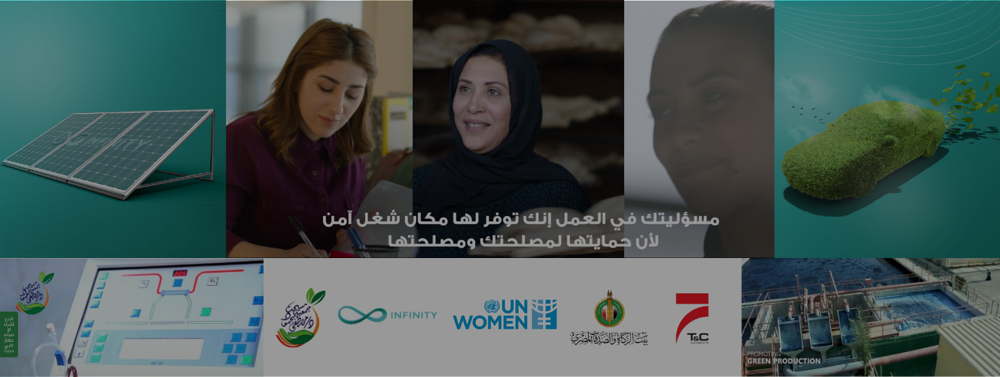
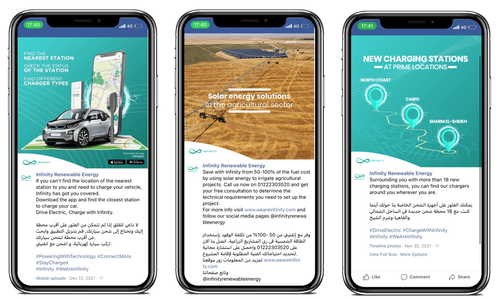
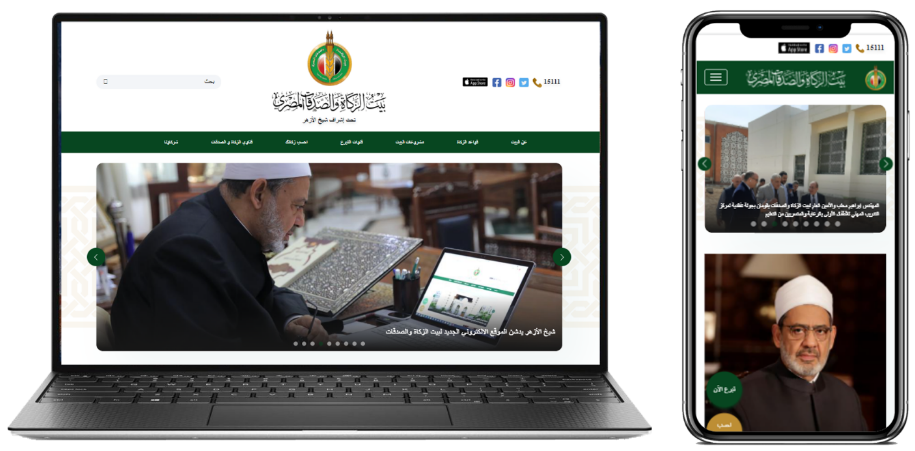
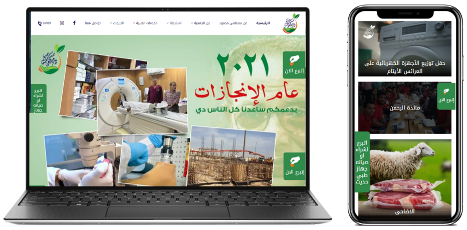
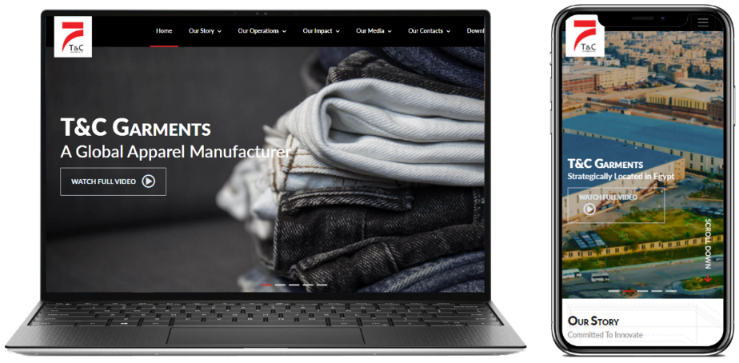

Icon Creations' Commitment to Sustainability
At Icon Creations, we use the collective power of creativity and innovation to ensure success and growth for our people, clients, communities and planet. We always strive to advise our clients on sustainability issues across all industries, and we apply the same principles internally to improve our own performance in terms of sustainable work.
Icon Creations has delivered a wide variety of digital campaigns and executions to support our clients on their sustainability journeys, all while playing our part in progress towards the UN Sustainable Development Goals through different initiatives, such as pro bono work.
Since our mantra is “we are about people, relationships and the convergence of vision, focus and teamwork”, we know that our people are our company. As we aim to constantly improve our practice in terms of sustainability, and help our clients to do the same, we focus on three key attributes: a clear direction; a guiding set of values; and a robust strategy for growth. All three come together in our people at Icon Creations.
But it’s not just about people; it’s about the differences and diversity between them that bring us together to form that wholesome team spirit – from gender, race and ethnicity, age, religion, disability, and much more.
Icon Creations fosters an inclusive culture that is equitable and respectful of diverse thoughts and individual expression. Our commitment to act ethically in all parts of our business acts as a cornerstone for upholding the highest levels of honesty and integrity in areas like ethics, human rights, privacy, and security. Since 2003, we have always sought to attract, retain and grow the most talented, creative and inspired people in Egypt. Today, exceptional talent is the life force of Icon Creations.
This is also a result of asking our people what they want in their roles at the agency, and more often than not the answer is opportunities to grow and learn, and that is exactly why we constantly invest in training and skills development with online courses and team building efforts. This in turn nurtures a culture of professional intimacy and a unique drive to always achieve more, helping us grow our people and business along the journey.
Sustainability Work
In line with our ongoing efforts to adhere to proper sustainability and goodwill practices, and doing our part in progressing towards the UN Sustainable Development Goals, Icon Creations has built several products and services across the years for a variety of clients in Egypt.
Here are a few examples:
Infinity Renewable Energy
Infinity is a leading comprehensive renewable energy solutions provider that aims to harness the power of clean natural energy to benefit whole cities, industries, private homes, and the environment. With a growing network of sustainable solutions across Egypt, Infinity operates in the solar, wind, waste to energy, and Electric Vehicle (EV) charging sectors to bring the best value to customers in a sustainable future-centric way.

UN Women
In efforts to raise awareness by the National Council for Women in partnership with the Ministry of Manpower, the Federation of Egyptian Industries, UN Women Egypt, and the International Labor Organization ILO Cairo, we were glad to produce a video that sheds light on women’s safety in the workplace by condemning the harassment culture at workplaces in Egypt, emphasizing the importance of women as an effective element of the workplace and their safety at work that must be ensured as a fundamental right by business owners and companies.
Egyptian House of Charity (بيت الزكاة والصدقات المصري)
The Egyptian House of Charity is a charitable organization that is concerned with the disbursement of zakat funds in its legally defined aspects in Egypt, as well as the dissemination of the spirit of solidarity and compassion among members of society in order to provide aid to the less fortunate populations.
www.baitzakat.org.eg
Mostafa Mahmoud Association
Launched in 1975, the Mostafa Mahmoud Association is a prominent charity organization that works to provide free medical service to the less fortunate and poor population in Egypt. Starting off with a few humble clinics, the Mostafa Mahmoud Association has grown into a full medical city with multiple treatment units centered on the Mostafa Mahmoud Mosque.
www.mostafamahmoudmosque.com
T&C Garments
Established in 2010, T&C Garments specializes in manufacturing finished denim products in a sustainable and environmentally friendly way, providing global brands with quality garments through advanced technology, innovation and placing sustainability at the forefront of their operations, contributing to the our planet’s greater good in the process.
www.tcgarments.com
Diversity & Inclusion
At Icon Creations, we are adamant on sustaining a healthy culture of diversity and inclusivity for all members of the national community.
Our collaborative way of doing things at the agency has definitely enhanced our performance and results, made possible by a diverse workforce that values connectivity and inclusiveness to generate the best possible outcomes for our clients and our employees.
Facts & Figures
- 33% women in senior management in 2022.
- 56% women in overall workforce in 2022.
- 10-15% annual pro bono work.
- Supporting our people’s physical & mental wellbeing.
- Provision of work opportunities for people in need of accessibility.
- Annual summer internships to empower youth and discover talent with iconic potential.
- Constant climate change awareness and CSR activities in collaboration with private and public brands.
As Egypt leads the sustainability movement in the Middle East & North Africa region for a cleaner, more environmentally friendly future, Icon Creations is proud to be doing its part and contributing to Egypt’s ongoing efforts by promoting sustainability through delivering a variety of products & services across all industries.
As a testament to Egypt playing a key role in regional and global sustainability, the 27th session of the Conference of the Parties (COP 27) to the United Nations Framework Convention on Climate Change (UNFCCC) is set to take place in Sharm El-Sheikh, Egypt on 7-18 November 2022. We are proud to witness this significant global environmental event on Egyptian land and we are looking forward to seeing favorable outcomes at COP27.
For more information, contact us here.